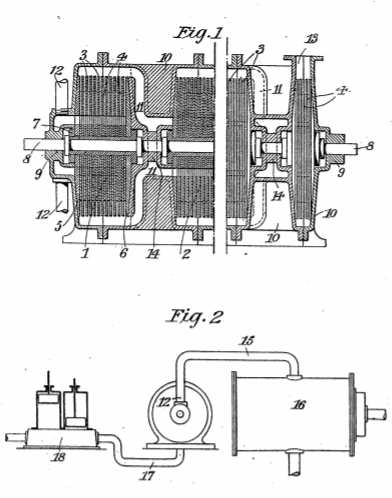

Descarga la patente original en esté enlace


Yo, NIKOLA TESLA, ingeniero mecánico y eléctrico, ciudadano de los Estados Unidos de América, de 8, West 40th Street, Nueva York, EE. UU., Declaro por la presente que la naturaleza de esta invención es la siguiente:
En el desarrollo de potencia mediante motores primarios termodinámicos, como motores de vapor y turbinas, una contrapresión baja es esencial para una buena economía, aumentando el rendimiento de la máquina del cincuenta al cien por cien.. reduciendo la presión absoluta en el espacio de escape de quince a aproximadamente una libra por pulgada cuadrada. Las turbinas son particularmente susceptibles a tal mejora y en su uso para la operación de centrales eléctricas y establecimientos de fabricación ha cobrado gran importancia la consecución y mantenimiento constante de altos vacíos, realizándose todos los esfuerzos posibles para mejorar las condiciones a este respecto. La ganancia efectuada por este medio depende, en gran medida, de la presión inicial, las características del motor primario, la temperatura del medio de enfriamiento, el costo del aparato de condensación y muchas otras cosas que son bien conocidas por los expertos. El ahorro teórico del cinco al seis por ciento. de combustible por cada pulgada adicional de vacío a menudo se aproxima mucho en las instalaciones modernas, pero las ventajas económicas se reducen considerablemente cuando se aplican vacíos más altos a las máquinas existentes diseñadas expresamente para operar con las más bajas. Más especialmente, esto es cierto en una turbina en la que la reducción de la contrapresión simplemente aumenta la velocidad de salida de los vapores sin aumentar materialmente la velocidad de su impacto contra las paletas, cubetas u órganos equivalentes, cuando la pérdida de energía cinética en el los gases de escape pueden compensar una parte considerable del trabajo útil. En tales casos, puede ser necesario realizar algunos cambios constructivos en la turbina y los auxiliares para asegurar los resultados aquí contemplados, pero el capital adicional utilizado para este propósito se invertirá de manera rentable.
Las principales dificultades que hasta ahora han retrasado el avance en esta dirección se encuentran en los enormes volúmenes de aire y vapor a presiones muy bajas, así como en las inevitables fugas en el condensador, juntas de tuberías, válvulas, prensaestopas y prensaestopas. En la actualidad, el agotamiento se realiza habitualmente mediante bombas recíprocas y estas, debido a la velocidad necesariamente baja de los pistones, son grandes y, además, incapaces de un rendimiento satisfactorio en presencia de grandes fugas. Como resultado directo de esto, la planta de condensación es voluminosa y cara y, lo que es peor, su tamaño y costo aumentan completamente en desproporción con los resultados obtenidos. Para ilustrar el desembolso involucrado en la instalación de un aparato de condensación para un vacío de veintiocho pulgadas es más del doble que el requerido para un vacío de veintiséis pulgadas y estos inconvenientes se enfatizan aún más con la reducción adicional de la contrapresión. Las bombas rotativas y los chorros de agua y vapor también se utilizan en la producción de vacunas, pero sin ventajas cualitativas marcadas. En cuanto al posible empleo de extractores centrífugos de etapas múltiples, los ingenieros aún tienen dudas. Hasta ahora, tales máquinas sólo han servido para fines de compresión y es más que probable que resulten inadecuadas para una rarefacción muy alta. La introducción del "aumentador de vacío" de Sir Charles Parsons y la bomba de "aire seco" de Weir fue un progreso decidido hacia el objetivo deseado.
He logrado un mayor éxito al apartarme del método habitual de eliminar el aire y el vapor arrastrado del condensador mediante transportadores corporales como chorros, pistones alternativos o paletas giratorias, y aprovechar las propiedades de adherencia y viscosidad que, según la evidencia experimental, son retenidos por los gases y vapores incluso con grados muy altos de atenuación. El nuevo proceso que he desarrollado así se hace practicable a través de un nuevo tipo de bomba que he inventado y descrito en mi Patente Británica No. 24.001 de 1910. Este dispositivo, convenientemente modificado en ciertos detalles de construcción y funciona a la velocidad periférica excesiva. del cual es capaz un sistema descargado, exhibe dos propiedades notables y valiosas. Una de ellas es expulsar los fluidos enrarecidos a una velocidad tan inmensa que se puede perforar un orificio de algún tamaño en el condensador sin mucho efecto sobre el vacuómetro. La otra es extraer los fluidos hasta que el agotamiento sea casi completo. Una máquina de este tipo, construida por etapas, es suficiente por sí sola para la producción de un vacío extremadamente alto y creo que esta cualidad es muy valiosa en la medida en que no la poseen en tal grado otros tipos de bombas comerciales que han llegado a mi país. conocimiento. Sin embargo, para evitar complicaciones y gastos indebidos, utilizo el aparato de escape ordinario y simplemente inserto entre él y el condensador mi bomba, que succiona los medios altamente atenuados, los comprime y los entrega al "aire seco" u otra bomba. . Esta combinación es especialmente ventajosa desde el punto de vista práctico, ya que se pueden obtener buenos resultados con una sola etapa y la instalación de mi dispositivo requiere un ligero cambio en la planta de vapor. Los beneficios que se derivan son dobles: se logra un mayor vacío y, lo que quizás sea más importante, se eliminan virtualmente los frecuentes e inevitables deterioros del mismo, que afectan gravemente a la economía. Mi bomba hace posible el mantenimiento de un alto vacío incluso cuando el porcentaje de aire u otros fluidos transportados con el vapor es muy grande y por eso debería resultar particularmente útil en el funcionamiento de turbinas de fluidos mixtos. se logra un vacío mayor y, lo que quizás sea más importante, se eliminan virtualmente los frecuentes e inevitables deterioros del mismo, que afectan gravemente a la economía. Mi bomba hace posible el mantenimiento de un alto vacío incluso cuando el porcentaje de aire u otros fluidos transportados con el vapor es muy grande y por eso debería resultar particularmente útil en el funcionamiento de turbinas de fluidos mixtos. se logra un vacío mayor y, lo que quizás sea más importante, se eliminan virtualmente los frecuentes e inevitables deterioros del mismo, que afectan gravemente a la economía. Mi bomba hace posible el mantenimiento de un alto vacío incluso cuando el porcentaje de aire u otros fluidos transportados con el vapor es muy grande y por eso debería resultar particularmente útil en el funcionamiento de turbinas de fluidos mixtos.
Fechado el 24 de marzo de 1921.
Nikola Tesla.
Yo, Nikola Tesla, Ingeniero Eléctrico y Mecánico, ciudadano de los Estados Unidos de América, de No. 8, West 40th Street, Nueva York, NY, EE. UU., Declaro por la presente la naturaleza de esta invención y de qué manera debe ser realizado, para ser particularmente descrito y comprobado en y por la siguiente declaración:
En el desarrollo de potencia mediante motores primarios termodinámicos, como motores de vapor y turbinas, una contrapresión baja es esencial para una buena economía, aumentando el rendimiento de la máquina del cincuenta al cien por cien.. reduciendo la presión absoluta en el espacio de escape de quince a aproximadamente una libra por pulgada cuadrada. Las turbinas son particularmente susceptibles a tal mejora y en su uso para la operación de centrales eléctricas y establecimientos de fabricación ha cobrado gran importancia la consecución y mantenimiento constante de altos vacíos, realizándose todos los esfuerzos posibles para mejorar las condiciones a este respecto. La ganancia efectuada por este medio depende, en gran medida, de la presión inicial, las características del motor primario, la temperatura del medio de enfriamiento, el costo del aparato de condensación y muchas otras cosas que son bien conocidas por los expertos. El ahorro teórico del cinco al seis por ciento. de combustible por cada pulgada adicional de vacío a menudo se aproxima mucho en las instalaciones modernas, pero las ventajas económicas se reducen considerablemente cuando se aplican vacíos más altos a las máquinas existentes diseñadas expresamente para operar con las más bajas. Más especialmente, esto es cierto en una turbina en la que la reducción de la contrapresión simplemente aumenta la velocidad de salida de los vapores sin aumentar materialmente la velocidad de su impacto contra las paletas, cubetas u órganos equivalentes, cuando la pérdida de energía cinética en el los gases de escape pueden compensar una parte considerable del trabajo útil. En tales casos, es posible que sea necesario realizar algunos cambios constructivos en la turbina y los auxiliares para asegurar los resultados aquí contemplados, pero el capital adicional utilizado para este propósito será rentable invertido.
Las principales dificultades que hasta ahora han retrasado el avance en esta dirección se encuentran en los enormes volúmenes de aire y vapor a presiones muy bajas, así como en las inevitables fugas en el condensador, juntas de tuberías, válvulas, prensaestopas y prensaestopas. En la actualidad, el agotamiento se realiza habitualmente mediante bombas recíprocas y estas, debido a la velocidad necesariamente baja de los pistones, son grandes y, además, incapaces de un rendimiento satisfactorio en presencia de grandes fugas. Como resultado directo de esto, la planta de condensación es voluminosa y cara y, lo que es peor, su tamaño y costo aumentan completamente en desproporción con los resultados obtenidos. Para ilustrarlo, el desembolso involucrado en la instalación de un aparato de condensación para un vacío de veintiocho pulgadas es más del doble que el requerido para un vacío de veintiséis pulgadas y estos inconvenientes se enfatizan aún más con la reducción adicional de la contrapresión. . Las bombas rotativas y los chorros de agua y vapor también se utilizan en la producción de vacunas, pero sin ventajas cualitativas marcadas.
He logrado un mayor éxito al apartarme del método habitual de eliminar el aire y el vapor arrastrado del condensador mediante transportadores corporales como chorros, pistones alternativos o paletas giratorias, y aprovechar las propiedades de adhesión y viscosidad que, según la evidencia experimental, son retenido por los gases y vapores incluso a muy altos grados de atenuación. Este nuevo proceso se hace practicable a través de una bomba, cuyo principio subyacente se explica completamente en mi patente británica 24.001 de 1910, pero que se modifica como se describe a continuación y cuando se ejecuta a la gran velocidad periférica de la que es capaz un sistema descargado, exhibe dos propiedades notables y valiosas. Una de ellas es expulsar los fluidos enrarecidos a una velocidad tan inmensa que se puede perforar un orificio de algún tamaño en el condensador sin mucho efecto sobre el vacuómetro. La otra es extraer los fluidos hasta que el agotamiento sea casi completo. Una máquina de este tipo, construida por etapas, es suficiente por sí sola para la producción de un vacío extremadamente alto y creo que esta cualidad es muy valiosa en la medida en que no la poseen en tal grado otros tipos de bombas comerciales que han llegado a mi país. conocimiento. También descubrí que se produce una combinación muy eficaz insertando mi bomba entre el condensador y una bomba de "aire seco" u otra. Esta combinación es especialmente ventajosa desde el punto de vista práctico, ya que se pueden obtener buenos resultados con una sola etapa y la instalación de mi dispositivo requiere un ligero cambio en la planta de vapor. Los beneficios que se derivan son dobles; se logra un vacío mayor y, lo que quizás sea más importante, se eliminan virtualmente los frecuentes e inevitables deterioros del mismo, que afectan gravemente a la economía. Mi bomba hace posible el mantenimiento de un alto vacío incluso cuando el porcentaje de aire u otros fluidos transportados con el vapor es muy grande y por eso debería resultar particularmente útil en el funcionamiento de turbinas de fluidos mixtos. prácticamente se eliminan. Mi bomba hace posible el mantenimiento de un alto vacío incluso cuando el porcentaje de aire u otros fluidos transportados con el vapor es muy grande y por eso debería resultar particularmente útil en el funcionamiento de turbinas de fluidos mixtos. prácticamente se eliminan. Mi bomba hace posible el mantenimiento de un alto vacío incluso cuando el porcentaje de aire u otros fluidos transportados con el vapor es muy grande y por eso debería resultar particularmente útil en el funcionamiento de turbinas de fluidos mixtos.
Mi invención se entenderá más completamente con referencia a los dibujos adjuntos en los que la figura 1 muestra una bomba de etapas múltiples de este tipo en vistas en sección, y la figura 2 ilustra su uso en conexión con una bomba alternativa de doble acción.
En la primera figura, 1,2, ... son rotores cada uno de los cuales, como 1, comprende un número de discos relativamente delgados 3, 3 ... separados por arandelas de estrella 4, 4 ... y mantenidos juntos por extremos rígidos. placas 5 y 6 en un manguito 7 que está encajado y enchavetado a un eje 8, apoyado rotativamente en cojinetes 9, 9. Los rotores están contenidos en cámaras separadas de una estructura común 10 que los rodea y está formada por partes unidas por conexiones de brida. A partir de la primera etapa en 1, los rotores disminuyen de ancho, cada uno de los siguientes se hace más estrecho que el anterior, por razones económicas obvias. Todos los discos delgados, como 3, 3 ... y las placas de extremo izquierdas, como 5, están provistos de las aberturas centrales habituales, pero las placas de los extremos de la derecha, como 6, están en blanco. Las cámaras individuales, que contienen los rotores, se comunican entre sí a través de canales, como 11, extendiéndose desde la región periférica de uno a la parte central del siguiente, de modo que los fluidos aspirados en las tomas 12, 12 se ven obligados a pasar por toda la serie de rotores y finalmente son expulsados por la abertura 13 con brida de la última cámara. Con el fin de reducir las fugas a lo largo del eje, se emplean juntas o cerraduras ajustadas, como 14, que pueden ser de construcción ordinaria y no necesitan detenerse específicamente. El número de etapas dependerá de la velocidad periférica y del grado de agotamiento que se desee asegurar y, en casos extremos, puede ser necesario prever una serie de estructuras separadas, con cojinetes intermedios para el eje. Cuando se considere preferible, la bomba puede ser del tipo de doble flujo, cuando no habrá un empuje lateral apreciable; de lo contrario, se deben tomar las medidas necesarias para recuperarla.
Las modificaciones en los detalles de construcción, a las que se ha hecho referencia, consisten en el empleo de espacios entre los discos más pequeños que hasta ahora, y de holguras laterales estrechas. Para dar un ejemplo práctico, puedo afirmar que espacios de 3/64 de pulgada serán efectivos en la producción de vacíos muy altos con discos de, digamos, 24 pulgadas de diámetro. También hago que todos los discos se estrechen, cuando es necesario, para operar de manera segura a una velocidad periférica extremadamente alta, lo cual es muy deseable ya que se refleja tanto en el tamaño de la máquina como en su efectividad.
La disposición representada esquemáticamente en la figura 2 es especialmente adecuada y ventajosa en relación con las plantas de vapor existentes que operan con alto vacío y permite llevar a cabo mis mejoras de una manera sencilla y con un coste comparativamente pequeño. En este caso, mi bomba, que puede tener un solo rotor de la descripción anterior, está conectada con su admisión 12, a través de una tubería 15, a la parte superior de un condensador 16, y con su abertura de descarga 13, por la tubería 17, al conducto de succión, de una bomba de aire seco alternativo 18. No hace falta decir que en la práctica las conexiones 15 y 17 serán conductos de red cortos de sección muy grande ya que el volumen de fluidos a bombear puede ser enorme.
La operación se entenderá fácilmente a partir de lo anterior. Las tomas 12 (Fig.1) están unidas por una conexión hermética al recipiente a descargar y el sistema de discos funciona a una velocidad periférica muy alta, los fluidos, debido a sus propiedades de viscosidad y adherencia, se extraen de recipiente hasta que se alcance el grado de rarefacción para el que se ha diseñado el aparato. En su paso a través de la serie de rotores, los fluidos se comprimen por etapas y se expulsan a través de la abertura 13 a un volumen muy reducido. El vacío producido por este medio puede ser extremadamente alto debido a las propiedades aparentemente únicas del dispositivo señaladas anteriormente, y como los fluidos, independientemente de su densidad, son succionados a una velocidad excesiva, se filtran por los casquillos, prensaestopas y conexiones. tienen un efecto leve.
En la disposición mostrada en la Fig. 2, mi bomba sirve para evacuar el condensador de manera mucho más efectiva y al comprimir los fluidos en la entrada de la bomba alternativa mejora el rendimiento de la misma. La instalación del dispositivo en plantas existentes no requiere grandes modificaciones en las mismas y supondrá un notable ahorro de combustible. Mi bomba también puede emplearse ventajosamente en lugar de un chorro de vapor junto con un condensador pequeño, en cuyo caso será de dimensiones insignificantes y económico en el consumo de vapor.
Habiendo ahora descrito y comprobado en particular la naturaleza de mi dicho invento y de qué manera se realizará el mismo, declaro que lo que reclamo es:
Fechado el día 23 de agosto de 1921.
Nikola Tesla.